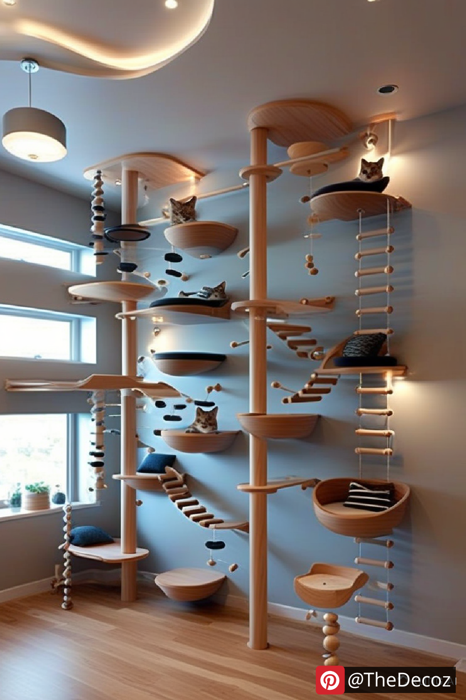

Cats are beloved companions, and creating a dedicated cat room can enhance their comfort while keeping your home stylish and organized. Whether you have one cat or multiple furry friends, designing a well-thought-out cat room decor can improve their quality of life and add charm to your space. This guide explores essential cat room decor ideas to inspire a purr-fect environment for your feline.
When designing a cat room, start by selecting a theme that blends with your home’s aesthetic. Popular themes include:
Minimalist Chic: Neutral colors, simple furniture, and sleek cat accessories.
Bohemian Retreat: Cozy textures, warm tones, and natural elements like rattan and wood.
Modern Playhouse: Bold colors, geometric designs, and innovative cat furniture.
Nature-Inspired Haven: Greenery, climbing trees, and eco-friendly materials.
Cats love vertical spaces, so incorporating multi-level cat trees, shelves, or wall-mounted perches will give them plenty of opportunities to climb and explore.
Provide soft and comfortable beds or enclosed hideouts where your cat can retreat for privacy and relaxation.
To protect your furniture, include scratching posts, pads, or wall-mounted scratchers that match your decor.
Include tunnels, hanging toys, and interactive play zones to keep your cat entertained and engaged.
A stylish cat room should also be practical. Consider the following storage solutions:
Multi-purpose furniture: Benches and ottomans with built-in storage for cat toys and accessories.
Wall-mounted shelves: Use floating shelves to keep clutter off the floor while doubling as climbing areas.
Hidden litter box furniture: Disguise the litter box within a decorative cabinet or enclosed unit.
Use non-toxic plants like cat grass and catnip to add greenery without posing a risk.
Opt for washable rugs and furniture covers to keep the room clean and fresh.
Choose soft lighting to create a cozy ambiance without overwhelming your cat’s senses.
Personalize the space with custom cat portraits, name plaques, or themed decor that reflects your pet’s personality. Wall decals or murals featuring playful cat designs can add charm without overpowering the room.
A well-designed cat room provides a sanctuary for your feline while complementing your home’s decor. By incorporating functional furniture, engaging play areas, and stylish elements, you can create a space that both you and your cat will love. Start designing your dream cat room today and enjoy a harmonious, pet-friendly home!
